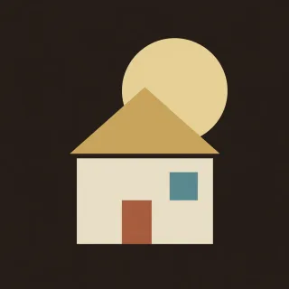

Songs · handpan arrangement for D Kurd
House of the Rising Sun
The Animals' 6/8 arpeggio and melody in A minor, with the ding as the D minor bass.

- Kind
- Songs
- Tempo
- 76 BPM
- Time signature
- 6/8
- Length
- 42 bars, about 66 seconds
- Notes used
- D3, A3, C4, D4, E4, F4, G4, A4, C5
- Added
- 2026-10-30
Play in AlamutLearn bar by bar
About this arrangement
House of the Rising Sun, the traditional song as The Animals play it, in 6/8 with two large beats per bar at 76 BPM. It sits in A minor on this pan: the low A on 1 is the root, the ding is the bass of the D minor bar, and the whole melody lies between the low A and the high A on 8. Count ONE two three FOUR five six. Intro is the organ arpeggio: A minor as 1 3 5 8 5 3, C as 3 5 7 9 7 5, D minor from the ding as 0 4 6 8 6 4, and F as 6 8 9 8 6, with the 5 at the end as the pickup for the singing. Verse carries the sung melody on the two large beats, 1 and 4, with one soft chord tone between them so the tune stays on top. The record's D major and E major chords have no F sharp or G sharp on this pan, so they become D minor and a bare E with G, which the older folk versions also use. The low A to high A leap on call and it's been is the climax; strike the 8 and 1 together and let the 8 ring. The F on 6 on And before God is the record's own colour note. Intro returns as the organ interlude, the verse repeats, and Outro is the arpeggio once more with the low and high A together to close. Learn the Intro arpeggios first, then sing the verse while you tap only the accented notes before adding the soft ones.
Notation
Each line is one bar in 6/8. Numbers are the pan's fields, a dot is a rest, brackets hold notes struck together, and × is a tak on the shoulder. Read the number legend below.
Intro
1 3 5 8 5 33 5 7 9 7 50 4 6 8 6 46 8 9 8 6 5
Verse
1 . 3 1 . 53 . 5 4 . 7[05] . 6 3 . 4[61] . 8 5 . 9[81] . 3 5 . 37 . 3 5 4 .5 . 7 . 5 75 . 7 . . 5[81] . 3 7 . 55 . 3 4 . 3[05] 5 6 1 . 4[63] . 8 4 . 85 . 1 6 . 35 . 7 3 . 51 . 3 5 . 31 . 3 5 . 5
Intro
1 3 5 8 5 33 5 7 9 7 50 4 6 8 6 46 8 9 8 6 5
Verse
1 . 3 1 . 53 . 5 4 . 7[05] . 6 3 . 4[61] . 8 5 . 9[81] . 3 5 . 37 . 3 5 4 .5 . 7 . 5 75 . 7 . . 5[81] . 3 7 . 55 . 3 4 . 3[05] 5 6 1 . 4[63] . 8 4 . 85 . 1 6 . 35 . 7 3 . 51 . 3 5 . 31 . 3 5 . 5
Outro
1 3 5 8 5 3[18] . . . . .
Number legend
0D3 (ding), 146.8 Hz1A3, 220.0 Hz2B♭3, 233.1 Hz3C4, 261.6 Hz4D4, 293.7 Hz5E4, 329.6 Hz6F4, 349.2 Hz7G4, 392.0 Hz8A4, 440.0 Hz9C5, 523.3 Hz×tak, a rim or shoulder tap
House of the Rising Sun
آرپژ ۶/۸ و ملودی The Animals در لا مینور، با دینگ بهعنوان باس رِ مینور.
House of the Rising Sun، ترانهٔ سنتی به اجرای The Animals، در میزان ۶/۸ با دو ضرب بزرگ در هر میزان و ۷۶ ضرب در دقیقه. روی این ساز در لا مینور است: لای بم روی ۱ نت پایه است، دینگ باس میزان رِ مینور است، و کل ملودی بین لای بم و لای بالا روی ۸ قرار دارد. بشمارید: یک دو سه چهار پنج شش، با تأکید روی یک و چهار. «مقدمه» آرپژ ارگ است: لا مینور به شکل ۱ ۳ ۵ ۸ ۵ ۳، دو ماژور به شکل ۳ ۵ ۷ ۹ ۷ ۵، رِ مینور از دینگ به شکل ۰ ۴ ۶ ۸ ۶ ۴، و فا ماژور به شکل ۶ ۸ ۹ ۸ ۶، با ۵ در آخر بهعنوان نت پیشضرب برای آواز. «بند» ملودی آواز را روی دو ضرب بزرگ، یک و چهار، میبرد، با یک نت نرم از آکورد میانشان تا ملودی بالا بماند. آکوردهای رِ ماژور و می ماژور اجرای اصلی روی این ساز فادیز و سلدیز ندارند، پس رِ مینور و یک می خالی با سل میشوند، همان چیزی که نسخههای فولک قدیمیتر هم به کار میبرند. پرش از لای بم به لای بالا اوج ملودی است؛ ۸ و ۱ را با هم بزنید و بگذارید ۸ طنین بیندازد. فا روی ۶ در نیمهٔ دوم بند، رنگ خود اجرای اصلی است. «مقدمه» بهعنوان میانپردهٔ ارگ برمیگردد، «بند» تکرار میشود، و «پایان» یک بار دیگر آرپژ است، با لای بم و لای بالا با هم برای بستن. اول آرپژهای «مقدمه» را یاد بگیرید. بعد بند را بخوانید و فقط نتهای تأکیددار را بزنید، و آخر سر نتهای نرم را اضافه کنید.
More Songs
Riffs and melodies from well-known songs, moved onto the pan's ten notes.